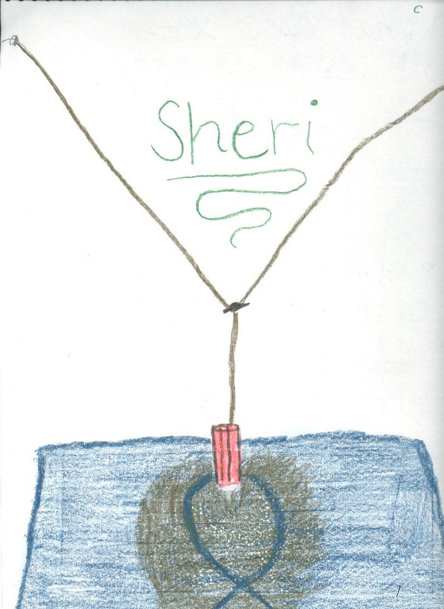

Sheri draws the complex sand pendulum
pattern
Don set up the complex sand pendulum in the math room. The
strings at the top are adjustable so one can change the total height of the
pendulum (pendulum #1). The strings come together to form a smaller pendulum
(pendulum #2) and are held together by an alligator clip so this height can be
changed. The sand is in a ketchup bottle. When the ketchup bottle is pulled off
center, the pendulums will swing, perpendicularly, forming "Lissajous"
figures like the one shown in Sheri's drawing. The pattern in the sand is
determined by the ratio of the frequencies of the 2 pendulums (in this case
3:2).

Sheri
writes 64 using exponents
Sheri
solves the quadratic equation x2 - x - 1 = 0
Sheri
finds the base for Don's age of 114? = 7110
Sheri
uses the quadratic formula to find base for Don's age of
114? = 7110
Sheri
finds the measure of an inscribed angle
Sheri
uses binary numerals to make the Magic Number Game cards
Sheri
changes the shape of a dog using matrices
Sheri
reduces the size of a shell using the pantograph
Sheri
moves a parabola and finds the equation
Sheri
finds the ratio of The Volume of a Pyramid / The Volume of a Cube (3 ways)
Sheri
figures out a rule for The Tower Puzzle
Sheri
starts Trig
To
other discoveries
To order
Don's materials
Mathman home